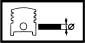

GUDGEON PIN
- Path
- Technical Data > Manufacturing data > 10 ENGINE > 1028 PISTONS AND CONNECTING RODS > GUDGEON PIN
- Kind
- technical data / specifications
- Applies to
- all engines; all production periods
- Interactive page
- https://sloeber94.github.io/elrnDB-lYpsln/en/#/2427754
Applies to: all engines; all production periods
Gudgeon pin external diameter (mm) | Validity | |||
|---|---|---|---|---|
17.970 ÷ 17.974 | 1.2 16v 1.2 8v 1.4 16v | |||
Gudgeon pin oversizel (mm) | Validity | |||
0.2 | 1.2 16v 1.2 8v | |||
Applies to: all engines; all production periods
Outer diameter (mm) | Validity |  | ||
|---|---|---|---|---|
22.982 ÷ 22.987 | 1.3 JTD | |||